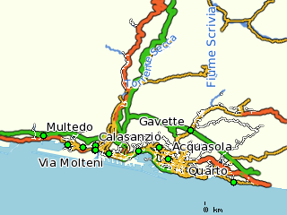
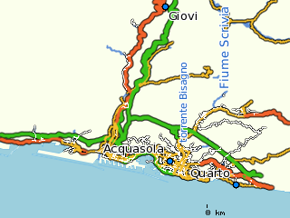
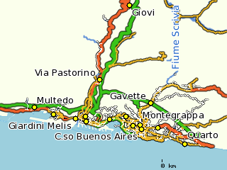
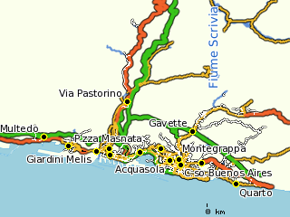

La Provincia di Genova mette a disposizione dei cittadini i dati quotidiani sull'inquinamento atmosferico tramite il sito web ufficiale. Questo è un fatto molto positivo, che permette a chiunque di avere un'idea della qualità dell'aria in città e nelle aree suburbane, e inoltre contiene previsioni sulla situazione nelle 24 ore successive alla emissione del bollettino.
Purtroppo, tutto ciò è disponibile solo in formato PDF. In altre parole, si può leggere e consultare ma non elaborare in altri modi: non c'è una tabella da cui si possa creare un grafico, un foglio di calcolo, una banca dati. Questo è un fatto negativo, perché i cittadini dovrebbero poter accedere a questi dati senza restrizioni tecnologiche.
Questo esperimento punta a colmare questo problema, e rendere i dati sulla qualità dell'aria un patrimonio di informazioni accessibile a tutti.
Nel 2007 abbiamo iniziato a mettere a punto un servizio per rendere disponibili e consultabili i dati pubblici che riguardano l'inquinamento atmosferico nella città di Genova.
Poiché la pubblicazione del bollettino è quotidiana, la base del servizio
è un cronjob in esecuzione sul server ominiverdi.org
che effettua ogni giorno il download del bollettino dalla URL
http://www2.provincia.genova.it/datiaria/Tabulato.pdf
e la salva in locale. Questa procedura è in esecuzione più o meno ininterrottamente
dal 7 febbraio 2008.
Lo script di download è disponibile su github.
I dati provengono dalla Provincia di Genova - Assessorato all'Ambiente, e sono forniti tramite il sito web http://www2.provincia.genova.it/datiaria/ in formato PDF.
I dati vengono aggiornati ogni mattina e sono riferiti alle 24 ore del giorno precedente. Quindi, la mattina di sabato 21 gennaio 2012 il bollettino conterrà i dati riferiti all'intervallo compreso tra la mezzanotte del 19 gennaio e la mezzanotte del 20 gennaio
L'elaborazione avviene su ScraperWiki, ed il procedimento è liberamente consultabile e modificabile.
New! È disponibile l'archivio dei PDF, aggiornato quotidianamente.
Il grafico mostra i dati sul particolato PM10 misurato nella stazione di Corso Buenos Aires. La misura è in µg/m³ ed è una media sulle 24 ore del giorno (dalla mezzanotte alla mezzanotte successiva).
La normativa prescrive che non venga superata la soglia dei 50 µg/m³ più di 7 volte all'anno.
Queste sono le coordinate delle stazioni di rilevamento, più o meno precise.
Per ogni stazione sono indicati i sensori installati.
| Località | Coordinate WGS84 | SO2 | O3 | NO2 | CO |
|---|---|---|---|---|---|
| Giovi | 44.54407, 8.936 | x | x | ||
| Acquasola | 44.40761, 8.939886 | x | x | x | x |
| Quarto | 44.38646, 8.99876 | x | x | x | x |
| Sestri Ponente | 44.42, 8.85 | x | x | x | |
| C.so Firenze | 44.418088, 8.931665 | x | x | x | |
| Villa Raggio | 44.417838, 8.863079 | x | |||
| Rimessa A.M.T. Cornigliano | 44.415032, 8.873586 | x | |||
| Calasanzio | 44.41968, 8.874874 | x | |||
| Corso Europa | 44.404803, 8.967917 | x | x | ||
| C.so Buenos Aires | 44.4032, 8.9499 | x | x | ||
| Gavette | 44.433183, 8.9598 | x | x | x | |
| P.zza Masnata | 44.41807, 8.88603 | x | x | ||
| Via Molteni | 44.411832, 8.886748 | x | x | x | |
| Via Buozzi | 44.41437, 8.91366 | x | x | x | |
| Via Pastorino | 44.460115, 8.902061 | x | x | ||
| Montegrappa | 44.407739, 8.948406 | x | x | ||
| Giardini Melis | 44.41559, 8.87434 | x | x | x | |
| Multedo | 44.427901, 8.827674 | x | x | x |
In queste mappe sono indicate le posizioni dei sensori per i 4 principali agenti inquinanti monitorati.
| Rilevatori SO2  |
Rilevatori O3  |
| Rilevatori NO2  |
Rilevatori CO  |
La mappa indica la posizione delle stazioni di rilevamento della Provincia di Genova.
La mappa è realizzata con UMN Mapserver utilizzando i dati di Openstreetmap e SRTM. I dati Openstreetmap non sono ancora completi per l'area genovese, ma si tratta dell'unico dataset libero disponibile.